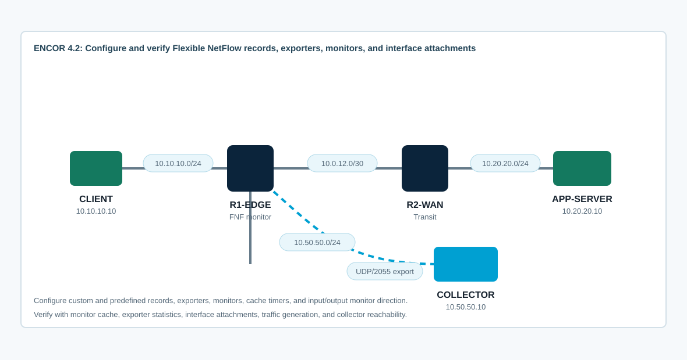

Overview
This lab targets ENCOR 4.2: configure and verify Flexible NetFlow. You will build a flow record, exporter, and monitor; attach the monitor to interfaces in the correct direction; generate traffic; and verify the flow cache and exporter statistics.
CCNP-level value comes from proving what is being measured. You must explain record match fields versus collect fields, why direction matters, how cache aging affects exported flows, and how to separate traffic-observation problems from collector-reachability problems.
Topology
CLIENT generates traffic through R1-EDGE and R2-WAN toward APP-SERVER. R1-EDGE exports flow data to COLLECTOR using UDP/2055. The starting CML topology has addressing and routing only; Flexible NetFlow is intentionally absent.

Task 1: Baseline Traffic and Collector Reachability
Confirm the path works before adding telemetry. Flexible NetFlow cannot export useful records if traffic is not traversing the monitored interface, and exporter failures are often simple routing or source-interface mistakes.
show ip interface brief
show ip route
show ip cef 10.20.20.10
ping 10.20.20.10 source 10.10.10.1
ping 10.50.50.10 source 10.50.50.1
show running-config | section flowFrom CLIENT, generate baseline traffic:
ping -c 5 10.20.20.10
wget -O- http://10.20.20.10
traceroute 10.20.20.10Task 2: Create a Custom Flow Record
Build a record for IPv4 application visibility. Match fields define the flow key. Collect fields add extra information to stored/exported records.
flow record ENCOR-IPV4-RECORD
description IPv4 application visibility for ENCOR 4.2
match ipv4 source address
match ipv4 destination address
match transport source-port
match transport destination-port
match interface input
match ip protocol
collect counter bytes long
collect counter packets long
collect timestamp sys-uptime first
collect timestamp sys-uptime last
collect routing next-hop address ipv4Alternative style to recognize:
flow monitor ENCOR-PREDEFINED
record netflow ipv4 original-inputDepth check: A custom record lets you decide what defines a unique flow. A predefined record is faster to deploy, but you must still understand what fields it matches and collects.
Task 3: Configure the Flow Exporter
Configure the exporter to send flow data to COLLECTOR. Use a stable source interface and verify that the collector address is reachable from that source.
flow exporter ENCOR-COLLECTOR
description Export to local collector
destination 10.50.50.10
source Ethernet0/2
transport udp 2055
export-protocol netflow-v9
template data timeout 60
option interface-table timeout 60Verify exporter configuration and reachability:
show flow exporter ENCOR-COLLECTOR
show flow exporter statistics
ping 10.50.50.10 source Ethernet0/2
show ip route 10.50.50.10If the collector is listening, you should see UDP/2055 packets arrive. Even without a decoder, IOS XE exporter statistics and cache entries prove whether records are being built and export attempts are occurring.
Task 4: Create and Attach the Flow Monitor
Connect the record and exporter with a monitor, then attach it to the interfaces where traffic actually crosses R1-EDGE.
flow monitor ENCOR-IPV4-MONITOR
description Monitor client-to-server flows
record ENCOR-IPV4-RECORD
exporter ENCOR-COLLECTOR
cache timeout active 60
cache timeout inactive 15
!
interface Ethernet0/0
ip flow monitor ENCOR-IPV4-MONITOR input
!
interface Ethernet0/1
ip flow monitor ENCOR-IPV4-MONITOR outputInterpret direction carefully. Input on Ethernet0/0 records traffic as it arrives from CLIENT. Output on Ethernet0/1 records forwarded traffic as it leaves toward R2-WAN. If you attach the monitor to the collector interface only, client-to-server flows will not appear there.
Task 5: Generate Traffic and Verify the Flow Cache
Generate ICMP and TCP traffic, then inspect cache and exporter output. Cache entries may appear before they are exported; inactive and active timers control when export occurs.
# CLIENT
ping -c 20 10.20.20.10
wget -O- http://10.20.20.10
# R1-EDGE
show flow monitor ENCOR-IPV4-MONITOR cache
show flow monitor ENCOR-IPV4-MONITOR cache format table
show flow monitor ENCOR-IPV4-MONITOR statistics
show flow exporter statistics
show running-config interface Ethernet0/0
show running-config interface Ethernet0/1Explain the record:
- Which source and destination addresses define the flow?
- Which protocol and ports distinguish ICMP from HTTP traffic?
- Which interface direction created the record?
- Did exporter counters increment after cache aging or manual clearing?
clear flow monitor ENCOR-IPV4-MONITOR cache
show flow exporter statisticsTask 6: Troubleshoot Flexible NetFlow Defects
Use these symptoms to diagnose common Flexible NetFlow mistakes.
- The monitor cache is empty because the monitor is attached to the wrong interface or wrong direction.
- The cache has flows but the exporter counter does not increment because the exporter is missing from the monitor.
- Exporter sends fail because the destination is unreachable from the configured source interface.
- The collector sees UDP packets but cannot decode fields because the template has not been exported or the wrong export protocol is configured.
- Short tests do not export immediately because inactive/active cache timers have not expired.
- Only one side of a conversation appears because ingress and egress are monitored asymmetrically.
show flow monitor
show flow monitor ENCOR-IPV4-MONITOR cache
show flow monitor ENCOR-IPV4-MONITOR statistics
show flow exporter
show flow exporter statistics
show platform software flow monitor
show running-config | section flow
show ip interface Ethernet0/0
show ip interface Ethernet0/1